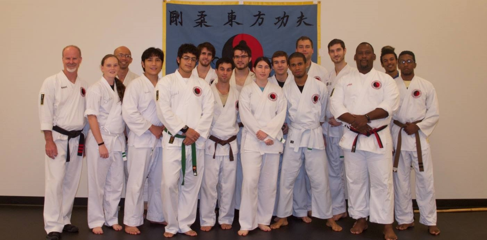

Cuong Nhu is a martial art which borrows the principles of seven other styles of martial arts for conflict resolution and to build the moral character of its students. It used the philosophy as a guide to shape the mind so the students can learn how to relate to people, avoid dangerous situations, deal with change and challenges and be upstanding citizens in the community. Cuong Nhu is a family friendly marital art that was formulated around the belief that relationships between classmates and family are strengthened by what they learn in class. It helps with self-control, discipline, modesty, honesty, physical & mental growth and self-confidence.
Classes are held on:
Tuesdays and Thursdays from 6-8pm in the Multipurpose Room in the Rec & Wellness Center (RWC).
Saturdays from 10am-12pm in Ferrell Auditorium across from the RWC.
Beginners are always welcome!
Cuong Nhu Oriental Martial Arts Association is a federally recognized non-profit educational organization. Cuong Nhu is a martial art that blends the basic elements of a number of different styles. Cuong Nhu has its roots in Shotokan Karate and combines aspects of Aikido, Judo, Wing Chun, Vovinam, Tai Chi Chuan, and Boxing. It is this blending of hard and soft styles from which Cuong Nhu (pronounced Kung New) derives its name, which is Vietnamese for Hard (Cuong) - Soft (Nhu).
The head instructor is Sensei Donald Williams, a 5th degree black belt. Sensei Mark Brandenburg (3rd degree), Kenric Lai (2nd degree) and Trevor Bonnell (2nd degree) assist Sensei Donald. Each brings their unique perspective to training that prepares students to become great martial artist and experience Cuong Nhu in a nurturing and fun way. Kicking, combinations, sparring and mat work are areas we love to explore.
Kim Hiep Si is Vietnamese for Golden Samurai. The mascot for UCF at the time of the dojo creation was Golden Knights. Since 2005, we have served the community and UCF as a quality martial arts dojo. Kim Hiep Si is part of the Cuong Nhu Oriental Martial Arts family.